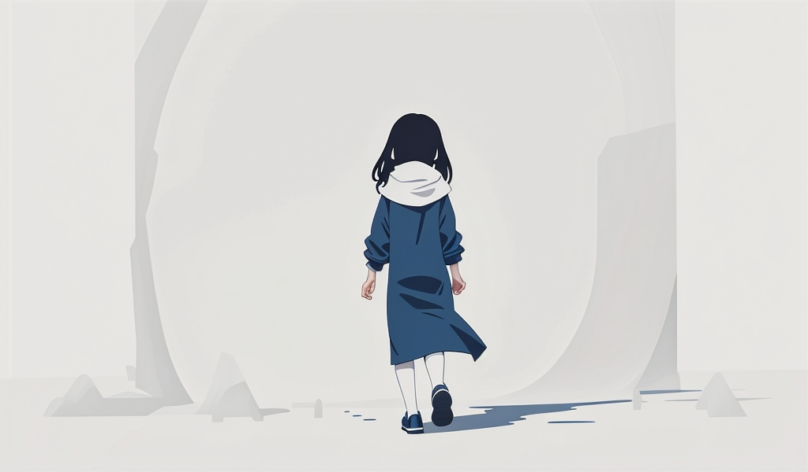

6/29 初投稿：ブログはじめます！
こんにちは、Ayappiです。
ブログを書きたいという願望と、最近のマイブームであるプログラミングが重なったこともあり、おもいきってブログサイトからゼロベースで始めることにしました。過去にも何度かHTMLとCSSでウェブサイトを作ったことはあるものの、どれも未完成のままで終わってしまっていたので、今回が初めての完成版となります:3
一旦はこれをベースに、のんびりと運用していく予定です。
ブログを始める理由はずばり「忘れないため」。考え方を記録することは実はとても大事で、私自身、大学生になってからほぼ毎月Vlog（ブログの動画版）や長文コメントを編集してはクローズに投稿していたのですが、あとから見返すと面白いぐらいに自分の生活や考え方が変わっているのが分かります。正直、記録していなければ気がついていなかったと思います。
一方で周りの友人からは、公開しないのはもったいない！と、嬉しいお言葉をいただいたので、こうしてパブリックに公開できる場所を作ることにした次第です。まだどのように運用していくかは未定ですが、利用しながら考えていきます！
自由気ままにやっていくかと思いますが、もしご興味があれば時折フラッと立ち寄っていただけると嬉しいですー！
